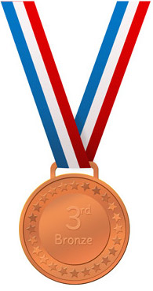

Explore the map to see how different European countries compare by their total number of medals on the Olympic games! What do you notice? Which countries perform best?
When you are ready, click on your country to find out detailed information!
X
Y

Z
Could it be because of a country's wealth?
Think about it - richer countries can invest more into supporting their sportists (facilities, equipment, salaries etc). Thus, they have more incentive to win. Let's check this theory on the graph below, which plots the number of medals in 2008 versus the respective country's GDP in the same year.
Do you notice the big group of poor countries underperforming on the lower left (Serbia, Romania etc)? And some rich countries with tons of medals on the upper right (UK, France, Spain)? Seems we are on the right track.
But what about that big group of rich countries in the lower right that still perform less well? What could be the reason?
How about a country's population?
Probabilistically, it makes sense that out of more people, it is more likely more better sportists would come out. Let's check it: